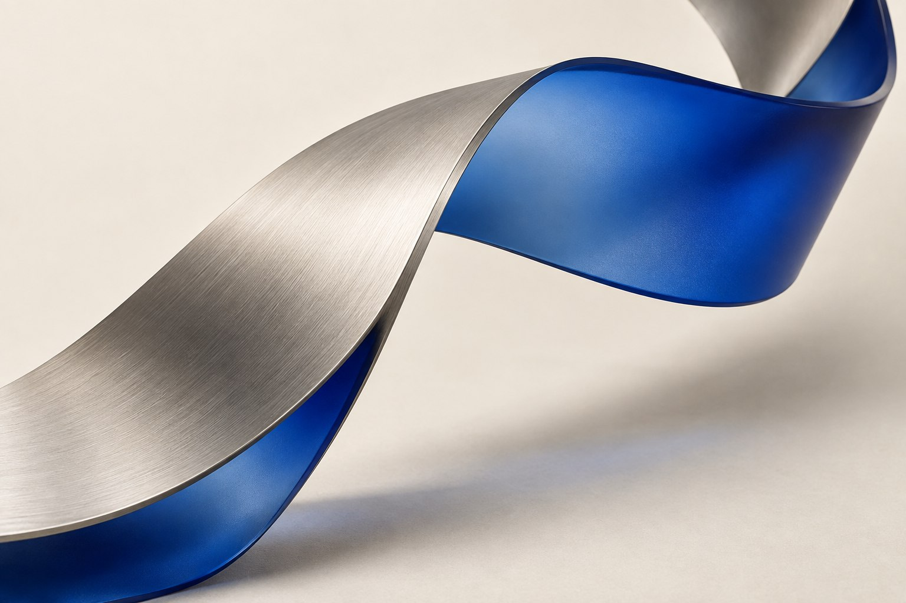

Designing motion
with purpose
The best website animation is not noticed as an effect. It is felt as clarity, rhythm and confidence.

Website animation has become a familiar part of modern digital design, but more movement does not create a more modern brand. In many cases it creates delay, distraction and uncertainty. Purposeful motion works differently: it explains what changed, shows where attention should go and gives the interface a recognisable tempo.
Motion is part of the interface language
When a navigation panel opens, an article card expands or a project image moves into focus, animation helps the visitor understand the relationship between two states. Without that relationship, an interface can feel abrupt. With too much animation, the same interface can feel slow and performative.
The right question is never “Where can we add motion?” It is “Which change needs to be understood?” That shift keeps interaction design useful. It also produces a more refined result because every transition has a reason to exist.
Where animation creates real value
- Orientation: transitions show whether content moved, opened or replaced something else.
- Hierarchy: timing can reveal the primary action before secondary information.
- Feedback: buttons, filters and forms respond immediately so users know the interface received their input.
- Brand rhythm: a precise, restrained movement system can make a digital product feel recognisably yours.
A premium interaction is not the one with the most frames. It is the one that removes the most uncertainty.
A useful approach for regional brands
Balkan businesses often need one website to serve very different audiences: local customers, international buyers, diaspora communities and potential employees. Motion can help organise that density, but it should never hide essential content or make a slower mobile connection feel second-class.
For a Croatian hotel, a short image transition can communicate atmosphere while availability and location remain immediate. For a Serbian software company, a product diagram can reveal complexity step by step. For a Bosnian architecture studio, project transitions can preserve a calm editorial pace. The treatment changes; the principle does not.
Performance is part of the creative direction
Animation should favour transforms and opacity, respect reduced-motion preferences and avoid making the browser recalculate layout on every frame. Heavy video, oversized 3D scenes and uncompressed image sequences need a clear reason to exist. If an effect delays the page’s main content, it works against the brand.
We prototype important transitions early and test them at realistic mobile sizes. This allows design and development decisions to happen together—one of the reasons our interactive web design process treats performance as a visual quality, not a final technical check.
A simple motion checklist
- Can the user still understand the page with motion disabled?
- Does the transition explain a spatial or functional change?
- Is the duration short enough to keep repeated actions efficient?
- Does it remain smooth on a typical mobile device?
- Does it match the brand’s character rather than a current trend?
When every answer is clear, motion stops feeling like decoration. It becomes part of how the brand communicates: responsive, considered and alive.